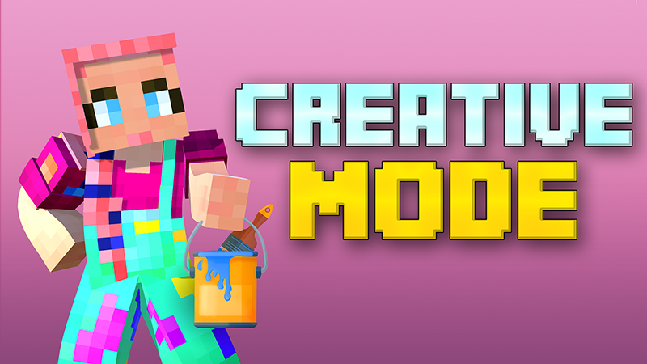
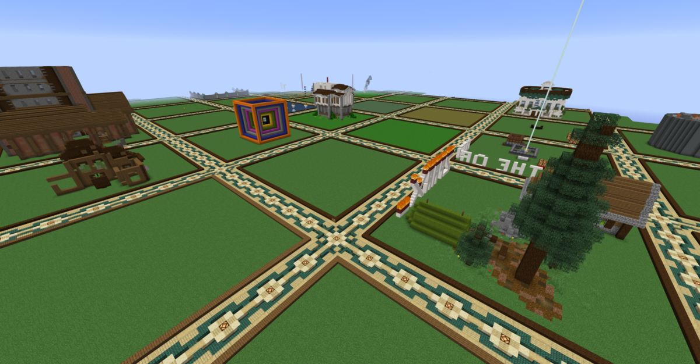

a Minecraft Creative az a minecraftban egy játék mód ahol mindened meg van tudsz házakat építeni meg bármit meg tudsz csinálni amit a survivor-bn is csak itt nem kell hozzá dolgozni
The following example shows how to create a basic carousel with indicators and controls.